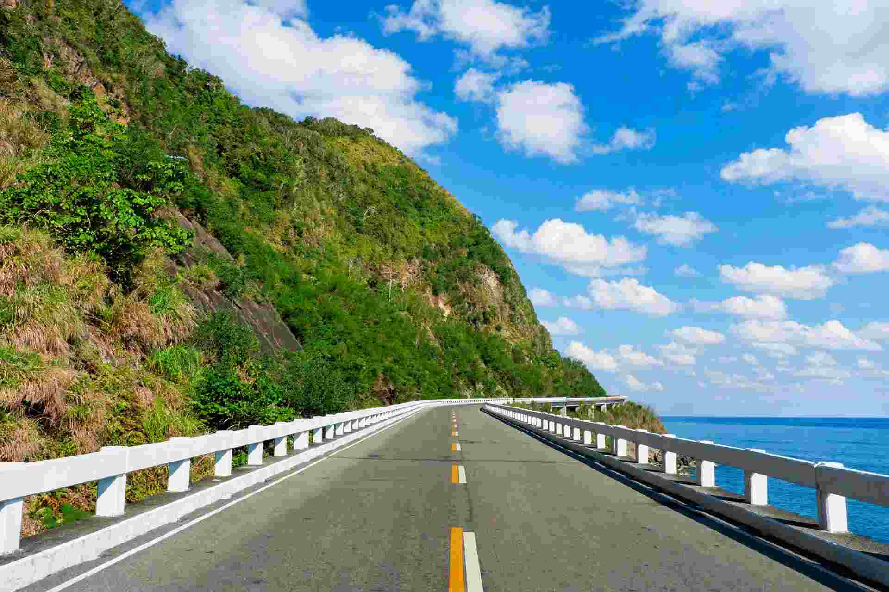

Laoag and Pagudpud make a satisfying three-day loop. Laoag gives you a sinking bell tower, a baroque church with earthquake buttresses, and a stretch of sand dunes. Pagudpud, about 72 kilometres north along the coast, gives you beaches at the top of Luzon. The road in between is the best part of the trip, and it is also the part most people underestimate.
The short version: spend the first day in Laoag, drive the coast on the second, and give the third to Pagudpud's beaches. Trying to fit everything into two days turns the coastal stops into a blur of windmills and photo spots.
The distances look short on a map, but the stops take longer than you plan. Below is what each place offers, what to expect at each one, and how to fit them together without rushing.

Laoag: Bell Tower, Baroque Church and Dunes
The Sinking Bell Tower stands beside St. William Cathedral in the city. The tower is believed to sink about an inch a year into the sandy ground, and the most accepted explanation is its heavy structure on soft soil. The city council prohibits unauthorized entry, so enjoy it from outside the grounds. Give it fifteen minutes, then move on.
Paoay Church, the San Agustin church in the town of Paoay, was inscribed by UNESCO in 1993 as part of the Baroque Churches of the Philippines. Its 24 large buttresses, around 1.67 metres thick, were built to protect the walls from earthquake damage, and they are the first thing you notice when you approach. The church reopened in November 2020 after restoration. Go in the morning or late afternoon, when the stone looks best and tour groups are thinner.
The La Paz Sand Dunes are reached from the neighboring town of Batac, about 30 minutes by tricycle. A 2017 guide listed 4x4 rides at PHP 2,500 per vehicle, with unlimited sandboarding included, and ATV rides at PHP 2,000 per person per hour. Rates change, so treat those figures as a starting point and confirm at the site before you pay. Ride in the afternoon so you can catch the light as it drops.
The Coast Road to Pagudpud
Laoag to Pagudpud is about 72 kilometres. A bus covers it in around 90 minutes on a direct run, but on a private vehicle you will stop often, so plan for most of a day. Leave early. The stops are quieter in the first hours, and the light on the coast is better before midday.
The Bangui Wind Farm is the stop most people make first. Turbines line the coast in Bangui, with more in neighboring Burgos and Caparispisan in Pagudpud. Wikipedia describes Bangui as the first power-generating windmill farm in Southeast Asia, and commercial operations began in 2005. You can drive beside the turbines and take photos from the road. Keep off the structures and stay out of work areas.
Kapurpurawan Rock Formation sits at the northwestern tip of Burgos, right beside the wind farm. Its name comes from the Ilocano word for white, which matches the white limestone that wind and sea have carved into rounded, unusual shapes. The rock is uneven underfoot, so wear closed shoes rather than sandals.
Cape Bojeador Lighthouse
Cape Bojeador Lighthouse was first lit on 30 March 1892 and still works today, now with a modern electric lamp powered by solar panels. Its original first-order lens was thrown out of alignment by the 1990 earthquake and no longer functions. The path up to the tower takes some effort, so go early in the day while it is cooler. Ask the caretakers about opening hours when you arrive, since they can change.
Patapat Viaduct and Bantay Abot Cave
The Patapat Viaduct opened in October 1986. It is a 1.3-kilometre bridge that follows the cliffs above Pasaleng Bay, reaching about 31 metres above sea level at its highest point. It is the drive's signature photo stop. Pull over where the shoulder is wide enough, and keep an eye out for traffic on the narrow stretches. Bantay Abot Cave is near the viaduct and is worth a look if you have time.
Pagudpud: Beaches at the Top of Luzon
Pagudpud is the northernmost settlement on Luzon, which gives the town a feeling of having reached the end of the road. Saud Beach is the main beach, and many of the guesthouses and resorts are along it. The Philippines' ninth tourist rest area opened on the beach in 2024, and from the sand you can see the Bangui windmills in the distance. For sunset, Burayoc Point near Saud is another spot to watch from.
Maira-Ira Beach, known to many visitors as Blue Lagoon, sits at the northernmost tip of Luzon on the Luzon Strait. It is a good swimming and snorkelling stop. The Dos Hermanos islets are one of the boat-trip options from the coast. Agree on the boat rate before you go out, and confirm what it includes, such as the snorkel gear and the stops.
Book rooms in Saud in advance if you are visiting in December to February or during Holy Week, when the town fills up. Staying at least one night in Pagudpud lets you catch sunrise at Blue Lagoon and sunset at Saud without rushing.
Getting to Ilocos Norte From Cebu
Laoag Airport is the nearest airport to the trip. Check the airline websites for a nonstop Cebu to Laoag flight before you book, since routes come and go. At the time of writing, the Philippine Airlines route page for Laoag to Cebu showed no fares, so do not assume a direct flight is running on your dates. If there is no nonstop, fly through Manila and continue by a domestic connection. One aggregator lists a fastest journey of about 3 hours 40 minutes, but connections can add hours.
In Laoag, a motorbike suits a confident rider on a two-day loop. A hired van with a driver suits groups and anyone who would rather not handle the coast road and its traffic. Check the brakes and tyres before you leave the rental, and fill the tank in Laoag before you head north.
If you have an extra day, Vigan is a natural stop on the way back south. The Vigan heritage weekend guide covers Calle Crisologo and the local food, and pairs well with this route.
A Three-Day Plan
Day 1: Laoag heritage and dunes
Check in near the city center. In the morning, walk to the Sinking Bell Tower and St. William Cathedral, then drive to Paoay Church. In the afternoon, head to La Paz Sand Dunes for a 4x4 ride and sunset. Finish with dinner in town and try the local longganisa and pinakbet.
Day 2: The coast to Pagudpud
Leave early. Stop at the Bangui Wind Farm, then Kapurpurawan, Cape Bojeador and the Patapat Viaduct. Arrive at Saud Beach in the early afternoon, check in and rest, then watch the sunset from the sand.
Day 3: Beaches and the return
Start with a swim at Maira-Ira or a boat trip to the Dos Hermanos islets. Drive or ride back to Laoag in the afternoon, and pick up pasalubong before you leave town.
What It Costs
The figures below are planning estimates, not quoted prices. Only the dune rate above comes from a published source, and it is from 2017. Confirm everything on the day.
Lodging is the biggest share of the budget. Simple rooms in Laoag and Saud generally start in the low thousands of pesos a night, and prices climb during the holiday season. Meals at local eateries are the cheapest option. For a wider picture of daily costs across the Philippines, the travel budget guide breaks down the main categories.
Transport changes the math. A motorbike is the cheapest way to cover the coast, but it also means long days in the wind. A hired van with a driver costs more, yet it splits well across a group of three or four and removes the navigation and parking from your hands.
Tips Before You Go
Start early on the coast
Bangui and Kapurpurawan are at their best in the early hours, before the midday crowds and the heat. The Patapat Viaduct gets busier during the day, so an early pass gives you more room for photos.
Bring a windbreaker and a hat with a strap
The coast can be breezy, especially at the windmills and on the viaduct. A strapped hat is a small thing that saves a lot of chasing.
Carry small bills
Tricycle rides, boat trips and small eateries often work better with small cash. Withdraw enough in Laoag before you head north, since ATMs in Pagudpud may be limited.
Check the weather before you fly
Typhoon season in northern Luzon usually runs from about July to October. Check the forecast with the national weather service before you book, and keep a flexible date if you can.
Respect the sites
Stay out of the wind farm work areas, keep behind the barriers at Cape Bojeador, and take your rubbish with you from the rock formations and the beaches.
Is It Worth It From Cebu?
Yes, if you want a trip that combines old churches, a long coastal drive and quiet beaches at the top of the island. Three days covers the highlights, but four is more comfortable, especially if you want a full day at the beach without watching the clock. Laoag gives you the history, the coast gives you the views, and Pagudpud gives you a reason to slow down.


Comments
No comments yet. Been here recently? Share a tip or ask a question.
Leave a Reply